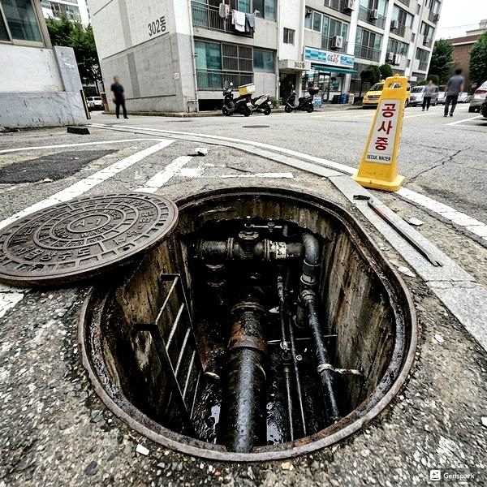
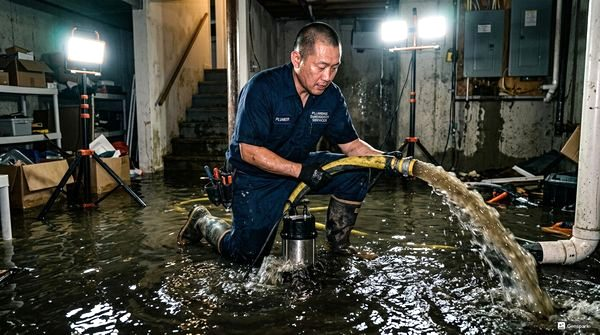
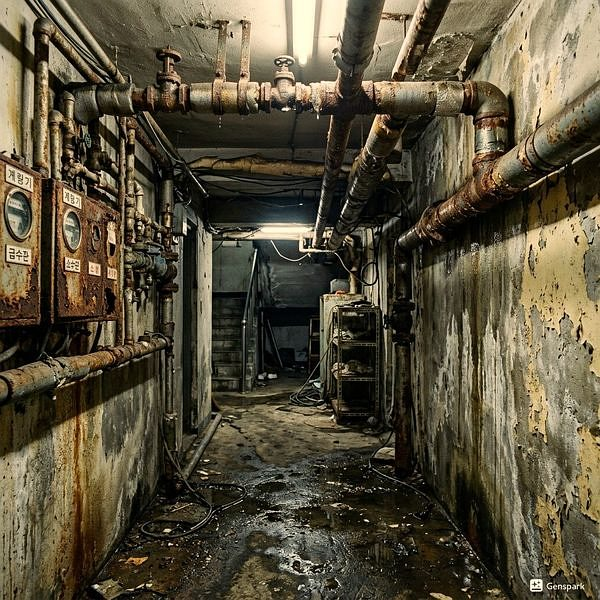

싱크대 배수구 막힘 - 원인별 해결법과 예방 관리
2026년 4월 12일 | 제우스시설관리

싱크대 배수구 막힘은 가정에서 가장 흔하게 발생하는 배관 문제입니다. 음식물 찌꺼기, 기름때, 세제 잔여물이 복합적으로 작용하여 배관 내벽에 고착되고, 결국 물이 내려가지 않는 상황이 됩니다.
싱크대 막힘의 원인 1위는 기름때입니다. 조리 후 프라이팬이나 냄비를 바로 씻으면 기름이 배관으로 흘러들어가 냉각되면서 굳습니다. 이 기름층 위에 음식물 찌꺼기가 달라붙어 점점 배관이 좁아집니다. 기름기가 많은 음식을 조리한 후에는 키친타월로 기름을 닦아낸 뒤 설거지하는 습관이 중요합니다.

경미한 막힘은 끓는 물을 부어 해결할 수 있습니다. 물 2리터를 끓여 배수구에 천천히 부으면 기름때가 녹아 흘러내립니다. 베이킹소다 반 컵을 넣고 식초 반 컵을 부어 15분간 방치한 후 뜨거운 물로 헹구는 방법도 효과적입니다.
이런 방법으로 해결되지 않으면 배관 깊숙한 곳에 막힘이 있는 것입니다. 이때는 전문 장비가 필요합니다. 제우스시설관리는 드레인 기계로 배관 내 막힌 덩어리를 직접 절삭하고, 고압세척기로 배관 내벽을 완벽하게 세척합니다.

예방을 위해 싱크대 거름망을 항상 사용하고, 주 1회 뜨거운 물을 흘려보내세요. 기름은 절대 배수구로 버리지 말고 폐유통에 모아 분리수거하세요. 문제가 발생하면 010-4406-1788로 연락주세요. 28분 내 출동합니다.